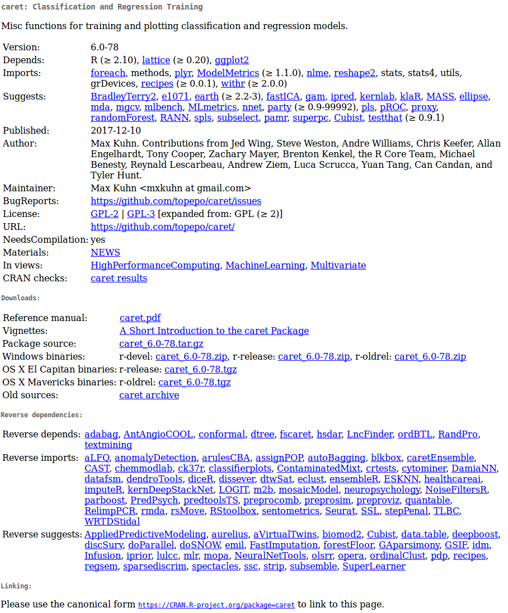

| Homogeneous | Heterogeneous | |
|---|---|---|
| 1d | Atomic vector | List |
| 2d | Matrix | Data frame |
| nd | Array |
R basics
Objectives
Get familiar with the basic blocks used in R programming
Know the main sources of standardized documentation in R
1 What is R?
- A free Domain Specific Language (DSL) for statistics and data analysis
- A collection of over 18695 packages (as of Sep-21-2022)
- A large and active community in both industry and academia
- A way to “speak directly” to your computer
Historically:
- Based on the S programming language
- Around 20 years old (the lineage dates back to 1975 - almost 40 years ago)

2 Rstudio
Integrated Development Environment (IDE) for R. It includes:
- A console
- Syntax-highlighting editor that supports direct code execution
- Tools for plotting, history, debugging, and workspace management

3 Elements of the R language
- Vectors
- Lists
- Matrices
- Data frames
- Functions (including operators)
- Tables
- Attributes
ArraysEnvironments
4 Basic structure of data representation
The basic data structure in R is the vector. There are two basic types of vectors: atomic vectors and lists.
They have three common properties:
- Type,
typeof()(class/mode ~) - Length,
length()(number of elements) - Attributes,
attributes()(metadata)
They differ in the types of their elements: all elements of an atomic vector must be of the same type, whereas elements of a list can have different types
Individual numbers or strings are actually vectors of length one.
4.1 Atomic vectors
Types of atomic vectors:
- Logical (boolean)
- Integer
- Numeric (double)
- Characters
- Factors
Vectors are constructed using the c() function:
Code
x <- 1
x1 <- c(1)
all.equal(x, x1)
## [1] TRUE
class(x)
## [1] "numeric"
y <- "something"
class(y)
## [1] "character"
z <- TRUE
class(z)
## [1] "logical"
q <- factor(1)
class(q)
## [1] "factor"
Vectors can only contain elements of the same type. Different types of elements will be coerced to the most flexible type:
Code
v <- c(10, 11, 12, 13)
class(v)
## [1] "numeric"
typeof(v)
## [1] "double"
y <- c("a", "b")
class(y)
## [1] "character"
x <- c(1,2,3, "a")
x
## [1] "1" "2" "3" "a"
class(x)
## [1] "character"
Missing values are specified with NA, which is a logical vector of length 1. NA will always be coerced to the correct type if used within c():
Code
v <- c(10, 11, 12, 13, NA)
class(v)
## [1] "numeric"
v <- c("a", "b", NA)
class(v)
## [1] "character"
4.2 Lists
Can contain objects of different classes and sizes. Lists are constructed with list():
Code
l <- list("a", 1, FALSE)
l[[1]]
[1] "a"
[[2]]
[1] 1
[[3]]
[1] FALSECode
class(l)[1] "list"Code
str(l)List of 3
$ : chr "a"
$ : num 1
$ : logi FALSEThey can actually be seen as bins where any other type of object can be put:
Code
l <- list(c("a", "b"), c(1, 2, 3, 4), c(FALSE, TRUE, FALSE))
str(l)List of 3
$ : chr [1:2] "a" "b"
$ : num [1:4] 1 2 3 4
$ : logi [1:3] FALSE TRUE FALSECode
l2 <- list(l, l)
str(l2)List of 2
$ :List of 3
..$ : chr [1:2] "a" "b"
..$ : num [1:4] 1 2 3 4
..$ : logi [1:3] FALSE TRUE FALSE
$ :List of 3
..$ : chr [1:2] "a" "b"
..$ : num [1:4] 1 2 3 4
..$ : logi [1:3] FALSE TRUE FALSE
4.3 Naming elements
Vectors can be named in three ways:
- When creating it:
x <- c(a = 1, b = 2, c = 3). - When modifying an existing vector in place:
x <- 1:3;names(x) <- c("a", "b", "c")Or:x <- 1:3;names(x)[[1]] <- c("a") - Creating a modified copy of a vector:
x <- setNames(1:3, c("a", "b", "c"))
Code
y <- c(a = 1, 2, 3)
names(y)[1] "a" "" "" Code
v <- c(1, 2, 3)
names(v) <- c('a')
names(v)[1] "a" NA NA Code
z <- setNames(1:3, c("a", "b", "c"))
names(z)[1] "a" "b" "c"
4.4 Factors
Attributes are used to define factors. A factor is a vector that can only contain predefined values and is used to store categorical data.
Factors are constructed on integer vectors using two attributes:
- class “factor”: makes them behave differently from normal character vectors
- levels: define the set of allowed values
Code
x <- factor(c("a", "b", "b", "a"))
x[1] a b b a
Levels: a bCode
levels(x)[1] "a" "b"Code
str(x) Factor w/ 2 levels "a","b": 1 2 2 1
Factors look like character vectors, but they are actually integers:
Code
x <- factor(c("a", "b", "b", "a"))
c(x)[1] a b b a
Levels: a b
4.5 Matrices
All elements are of the same type:
Code
m <- matrix(c(1, 2, 3, 11, 12, 13), nrow = 2)
dim(m)[1] 2 3Code
m [,1] [,2] [,3]
[1,] 1 3 12
[2,] 2 11 13Code
class(m)[1] "matrix" "array" Code
m <- matrix(c(1, 2, 3, 11, 12, "13"), nrow = 2)
m [,1] [,2] [,3]
[1,] "1" "3" "12"
[2,] "2" "11" "13"
4.6 Data frames
Special case of lists. Can contain elements of different types:
Code
m <-
data.frame(
ID = c("a", "b", "c", "d", "e"),
size = c(1, 2, 3, 4, 5),
observed = c(FALSE, TRUE, FALSE, FALSE, FALSE)
)
dim(m)[1] 5 3Code
m| ID | size | observed |
|---|---|---|
| a | 1 | FALSE |
| b | 2 | TRUE |
| c | 3 | FALSE |
| d | 4 | FALSE |
| e | 5 | FALSE |
Code
class(m)[1] "data.frame"Code
is.data.frame(m)[1] TRUECode
is.list(m)[1] TRUECode
str(m)'data.frame': 5 obs. of 3 variables:
$ ID : chr "a" "b" "c" "d" ...
$ size : num 1 2 3 4 5
$ observed: logi FALSE TRUE FALSE FALSE FALSE
But vectors must have the same length:
Code
m <-
data.frame(
ID = c("a", "b", "c", "d", "e"),
size = c(1
, 2, 3, 4, 5, 6),
observed = c(FALSE, TRUE, FALSE, FALSE, FALSE)
)Error in data.frame(ID = c("a", "b", "c", "d", "e"), size = c(1, 2, 3, : arguments imply differing number of rows: 5, 6
5 Exercise 1
Create a numeric vector with 8 elements containing positive and negative numbers
Create a character vector with the names of the stations that will be visited during the course
Add an NA to the above point vector
Create a numeric matrix with 3 columns and 3 rows
Create a character matrix with 4 columns and 3 rows
What type of object is ‘iris’ and what are its dimensions?
Create a data frame with a numeric column, a character column, and a column with factors
6 Extracting subsets using indexing
Elements within objects can be called by indexing. To subset a vector simply call the object’s position using square brackets:
Code
x <- c(1, 3, 4, 10, 15, 20, 50, 1, 6)
x[1][1] 1Code
x[2][1] 3Code
x[2:3][1] 3 4Code
x[c(1,3)][1] 1 4
Elements can be removed in the same way:
Code
x[-1][1] 3 4 10 15 20 50 1 6Code
x[-c(1,3)][1] 3 10 15 20 50 1 6
Matrices and data frames require 2 indices [row, column]:
Code
m <- matrix(c(1, 2, 3, 11, 12, 13), nrow = 2)
m[1, ][1] 1 3 12Code
m[, 1][1] 1 2Code
m[1, 1][1] 1Code
m[-1, ][1] 2 11 13Code
m[, -1] [,1] [,2]
[1,] 3 12
[2,] 11 13Code
m[-1, -1][1] 11 13Code
df <- data.frame(
family = c("Psittacidae", "Trochilidae", "Psittacidae"),
genus = c("Amazona", "Phaethornis", "Ara"),
species = c("aestiva", "philippii", "ararauna")
)
df| family | genus | species |
|---|---|---|
| Psittacidae | Amazona | aestiva |
| Trochilidae | Phaethornis | philippii |
| Psittacidae | Ara | ararauna |
Code
df[1, ]| family | genus | species |
|---|---|---|
| Psittacidae | Amazona | aestiva |
Code
df[, 1][1] "Psittacidae" "Trochilidae" "Psittacidae"Code
df[1, 1][1] "Psittacidae"Code
df[-1, ]| family | genus | species | |
|---|---|---|---|
| 2 | Trochilidae | Phaethornis | philippii |
| 3 | Psittacidae | Ara | ararauna |
Code
df[, -1]| genus | species |
|---|---|
| Amazona | aestiva |
| Phaethornis | philippii |
| Ara | ararauna |
Code
df[-1, -1]| genus | species | |
|---|---|---|
| 2 | Phaethornis | philippii |
| 3 | Ara | ararauna |
Code
df[,"family"][1] "Psittacidae" "Trochilidae" "Psittacidae"Code
df[,c("family", "genus")]| family | genus |
|---|---|
| Psittacidae | Amazona |
| Trochilidae | Phaethornis |
| Psittacidae | Ara |
Lists require 1 index between double brackets [[index]]:
Code
l <- list(c("a", "b"),
c(1, 2, 3),
c(FALSE, TRUE, FALSE, FALSE))
l[[1]][1] "a" "b"Code
l[[3]][1] FALSE TRUE FALSE FALSE
Elements within lists can also be subset in the same line of code:
Code
l[[1]][1:2][1] "a" "b"Code
l[[3]][2][1] TRUE
7 Exploring objects
Code
str(df)'data.frame': 3 obs. of 3 variables:
$ family : chr "Psittacidae" "Trochilidae" "Psittacidae"
$ genus : chr "Amazona" "Phaethornis" "Ara"
$ species: chr "aestiva" "philippii" "ararauna"Code
names(df)[1] "family" "genus" "species"Code
dim(df)[1] 3 3Code
nrow(df)[1] 3Code
ncol(df)[1] 3Code
head(df)| family | genus | species |
|---|---|---|
| Psittacidae | Amazona | aestiva |
| Trochilidae | Phaethornis | philippii |
| Psittacidae | Ara | ararauna |
Code
tail(df)| family | genus | species |
|---|---|---|
| Psittacidae | Amazona | aestiva |
| Trochilidae | Phaethornis | philippii |
| Psittacidae | Ara | ararauna |
Code
table(df$genus)
Amazona Ara Phaethornis
1 1 1 Code
class(df)[1] "data.frame"Code
View(df)
8 Functions
All functions are created with the function() function and follow the same structure:

* Modified from Grolemund 2014
R comes with many functions that you can use to perform sophisticated tasks:
Code
# built in functions
bi <- builtins()
length(bi)[1] 1388Code
set.seed(22)
sample(bi, 10) [1] "print.warnings" ".colMeans"
[3] "row" ".encode_numeric_version"
[5] "gzcon" "delayedAssign"
[7] "rep.int" "class"
[9] ".mergeExportMethods" "charmatch"
Operators are functions:
Code
1 + 1[1] 2Code
'+'(1, 1)[1] 2Code
2 * 3[1] 6Code
'*'(2, 3)[1] 6
8.1 Most used operators
Arithmetic operators:
| Operator | Description |
|---|---|
| + | addition |
| - | subtraction |
| * | multiplication |
| / | division |
| ^ or ** | exponentiation |
Code
1 - 2[1] -1Code
1 + 2[1] 3Code
2 ^ 2[1] 4Code
2 ** 2[1] 4Code
2:3 %in% 2:4[1] TRUE TRUE
Logical operators:
| Operator | Description |
|---|---|
| < | less than |
| <= | less than or equal to |
| > | greater than |
| >= | greater than or equal to |
| == | exactly equal to |
| != | not equal to |
| !x | not x |
| x | y | x OR y |
| x & y | x AND y |
| x %in% y | match |
Code
1 < 2 [1] TRUECode
1 > 2 [1] FALSECode
1 <= 2 [1] TRUECode
1 == 2[1] FALSECode
1 != 2[1] TRUECode
1 > 2 [1] FALSECode
5 %in% 1:6[1] TRUECode
5 %in% 1:4[1] FALSE9 Exercise 2
Use the sample data
iristo create a subset of data with only observations of the speciessetosaNow create a subset of data containing observations of both “setosa” and “versicolor”
Also with
iriscreate a subset of data with observations for whichiris$Sepal.lengthis greater than 6How many observations have a sepal length greater than 6?
Most functions are vectorized:
Code
1:6 * 1:6
* Modified from Grolemund & Wickham 2017
[1] 1 4 9 16 25 36Code
1:6 - 1:6[1] 0 0 0 0 0 0R recycles vectors of unequal length:
Code
1:6 * 1:5
* Modified from Grolemund & Wickham 2017
```{r,
echo=F}
1:6 * 1:5
::: {.cell}
```{.r .cell-code}
1:6 + 1:5Warning in 1:6 + 1:5: longitud de objeto mayor no es múltiplo de la longitud de
uno menor[1] 2 4 6 8 10 7:::
10 Style Matters
Based on google’s R Style Guide
10.1 File Names
File names should end in .R and, of course, be self-explanatory:
- Good: plot_probability_posterior.R
- Bad: plot.R
10.2 Object Names
Variables and functions:
- Lowercase
- Use an underscore
- Generally, names for variables and verbs for functions
- Make names concise and meaningful (not always easy)
- Avoid using names of existing functions or variables
Code
- Good: day_one: day_1, average_weight(),
- Bad: dayone, day1, first.day_of_month, mean <- function(x) sum(x), c <- 10
10.3 Syntax
10.3.1 Spaces
- Use spaces around operators and for arguments within a function
- Always put a space after a comma, and never before (as in normal English)
- Place a space before the left parenthesis, except in a function call
Code
- Good:
a <- rnorm(n = 10, sd = 10, mean = 1)
tab.prior <- table(df[df$dias < 0, "campaign.id"])
total <- sum(x[, 1])
total <- sum(x[1, ])
if (debug)
mean(1:10)
- Bad:
a<-rnorm(n=10,sd=10,mean=1)
tab.prior <- table(df[df$days.from.opt<0, "campaign.id"]) # needs space around '<'
tab.prior <- table(df[df$days.from.opt < 0,"campaign.id"]) # Needs space after comma
tab.prior<- table(df[df$days.from.opt < 0, "campaign.id"]) # Needs space before <-
tab.prior<-table(df[df$days.from.opt < 0, "campaign.id"]) # Needs space around <-
total <- sum(x[,1]) # Needs space before comma
if(debug) # Needs space before parenthesis
mean (1:10) # Extra space after function name
10.3.2 Brackets
- Opening brace should never go on its own line
- Closing brace should always go on its own line
- You may omit braces when a block consists of a single statement
Code
- Good:
if (is.null(ylim)) {
ylim <- c(0, 0.06)
}
if (is.null(ylim))
ylim <- c(0, 0.06)
- Bad:
if (is.null(ylim)) ylim <- c(0, 0.06)
if (is.null(ylim)) {ylim <- c(0, 0.06)}
if (is.null(ylim)) {
ylim <- c(0, 0.06)
}
10.4 Creating Objects
- Use <-, not =
Code
- GOOD:
x <- 5
- BAD:
x = 5
10.5 Commenting
- Comment your code
- Fully commented lines should start with # and a space
- Short comments can be placed after the code preceded by two spaces, #, and then a space
Code
# Create histogram of frequency of campaigns by pct budget spent.
hist(df$pct.spent,
breaks = "scott", # method for choosing number of buckets
main = "Histogram: individuals per unit of time",
xlab = "Number of individuals",
ylab = "Frequency")11 R Documentation
Most R resources are well-documented. So the first source of help you should turn to when writing R code is R’s own documentation. All packages are documented in the same standard way. Getting familiar with the format can simplify things a lot.
11.1 Package Documentation

Reference Manuals
Reference manuals are collections of documentation for all functions of a package (only 1 per package):
11.2 Function Documentation
All functions (default or from loaded packages) should have documentation following a standard format:
Code
?mean
help("mean")
This documentation can also be displayed in RStudio by pressing F1 when the cursor is on the function name.
If you don’t remember the function name, try apropos():
Code
apropos("mean") [1] ".colMeans" ".rowMeans" "colMeans" "kmeans"
[5] "mean" "mean.Date" "mean.default" "mean.difftime"
[9] "mean.POSIXct" "mean.POSIXlt" "rowMeans" "weighted.mean"
11.3 Vignettes
Vignettes are illustrative documents or case studies detailing the usage of a package (optional, there can be several per package).
Vignettes can be called directly from R:
Code
vgn <- browseVignettes() Code
vignette()They should also appear on the package page on CRAN.
11.4 Demonstrations
Packages can also include extended code demonstrations (“demos”). To list the demos of a package, run demo("package name"):
Code
demo(package="stats")
# call demo directly
demo("nlm")
12 Exercise 3
What does the function
cut()do?What is the purpose of the
breaksargument incut()?Execute the first 4 lines of code from the examples provided in the documentation of
cut().How many vignettes does the package warbleR have?
References
- Advanced R, H Wickham
- Google’s R Style Guide
- Hands-On Programming with R (Grolemund, 2014)
Session Information
R version 4.3.2 (2023-10-31)
Platform: x86_64-pc-linux-gnu (64-bit)
Running under: Ubuntu 22.04.2 LTS
Matrix products: default
BLAS: /usr/lib/x86_64-linux-gnu/blas/libblas.so.3.10.0
LAPACK: /usr/lib/x86_64-linux-gnu/lapack/liblapack.so.3.10.0
locale:
[1] LC_CTYPE=en_US.UTF-8 LC_NUMERIC=C
[3] LC_TIME=en_US.UTF-8 LC_COLLATE=en_US.UTF-8
[5] LC_MONETARY=en_US.UTF-8 LC_MESSAGES=en_US.UTF-8
[7] LC_PAPER=en_US.UTF-8 LC_NAME=C
[9] LC_ADDRESS=C LC_TELEPHONE=C
[11] LC_MEASUREMENT=en_US.UTF-8 LC_IDENTIFICATION=C
time zone: America/Costa_Rica
tzcode source: system (glibc)
attached base packages:
[1] stats graphics grDevices utils datasets methods base
loaded via a namespace (and not attached):
[1] vctrs_0.6.5 svglite_2.1.3 cli_3.6.3 knitr_1.48
[5] rlang_1.1.4 xfun_0.47 stringi_1.8.4 highr_0.11
[9] jsonlite_1.8.8 glue_1.7.0 colorspace_2.1-1 htmltools_0.5.8.1
[13] scales_1.3.0 rmarkdown_2.28 evaluate_0.24.0 munsell_0.5.1
[17] kableExtra_1.4.0 fastmap_1.2.0 yaml_2.3.10 lifecycle_1.0.4
[21] stringr_1.5.1 compiler_4.3.2 htmlwidgets_1.6.4 rstudioapi_0.16.0
[25] systemfonts_1.1.0 digest_0.6.37 viridisLite_0.4.2 R6_2.5.1
[29] magrittr_2.0.3 tools_4.3.2 xml2_1.3.6